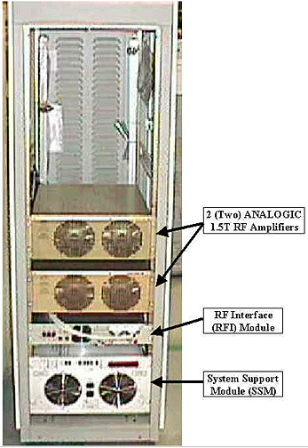

Operating Documentation
Direction 5440001-3, Rev# 6
Signa HDxt Service Methods
Module Version 3.0, Version Date 12/11/09
Operating Documentation |
This procedure describes how to calibrate the RFI in a 1.5T system. The SRF should come from the factory pre-calibrated and, ideally, initial calibration of the module in the field should not be needed. However, this procedure must be performed to confirm it is calibrated. (See Illustration 1 to confirm that the 1.5T SRF cabinet pictured matches the cabinet to be checked and/or adjusted.)
Calibration is done to prevent faults and to make sure that the SRF is outputting the specified 16 kW of RF body power and 2 kW of RF head power. Adjustments may need to be made if any of the hardware in the RF chain was replaced (explained in Calibration Requirements After Hardware Replacements), output levels decreased with age, or if any of the measurements taken during the check are found not to meet specifications.
The steps inBody and Head Maximum Power RF Output Check are done and, if within specification, no adjustments will be made.
Next is the procedure for Body and Head RF Output Power Adjustments. References are made in the procedure and provide additional information/directions to assist with accomplishing the RF power measurement task.)
General Troubleshooting provides helpful troubleshooting information in the event that a problem is encountered during the RF power check or calibration.
Illustration 1: 1.5T SRF Cabinet

1.5T SRF Replacements or Upgrade Cabinets Only:
Verify that the External Probe Filter is not connected at MR2A11J1 (located on the inside, rear of the System Cabinet and usually affixed with Velcro to the top of the I/F panel). It was only necessary for CERD exciters with part number 2148300-2.
If the filter is present, bypass it:
Disconnect the cable (connected on the inside of the cabinet at MR2A1J1) that is coming from the OUT port on the filter.
Disconnect the cable connected to the IN port on the filter, and reconnect the cable removed from the filter IN port to MR2A1J1 on the inside of the System Cabinet I/F panel.
Remove and properly discard the filter and associated cable connected to the filter OUT port.
| NOTE: | The Body and Head Gain pots are in series with each other. The Body Gain pot is first in the series. The Head Gain pot is factory set so that the head gain is 9 dB less (63 dBm) than the body gain (72 dBm). |
General Reference Material: